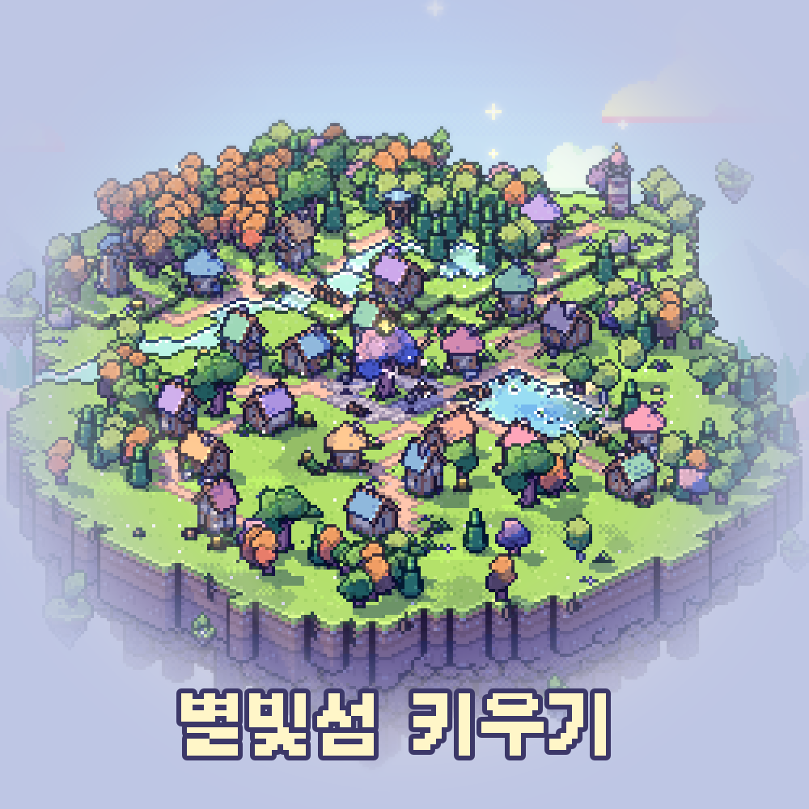

Your browser does not support the canvas tag.
Your browser does not support JavaScript.

처음 열 때는 준비하는 데
30초~1분
쯤 걸려요.
화면이 멈춘 것 같아도 창을 닫지 말고 기다려 주세요.
「페이지 응답 없음」 창이 뜨면
기다리기
를 눌러 주세요.
한 번 열고 나면 다음부터는 금방 열려요.